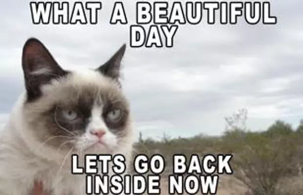

Grumpy Cat is the nickname given to Tardar Sauce, a snowshoe cat that rose to online fame after several pictures of her annoyed facial expressions were posted to Reddit in late September 2012. Many fan images we're given to the original photo's depicting them in a ironic manner

The Reddit post was instantly met with photoshopped parodies and image macros from others, reaching the front page with more than 25,300 up votes in the first 24 hours. Meanwhile, the Imgur page[13] gained nearly 1,030,000 views in the first 48 hours. The same day, three video clips of the cat playing indoors were uploaded to YouTube by Bundesen the same day.